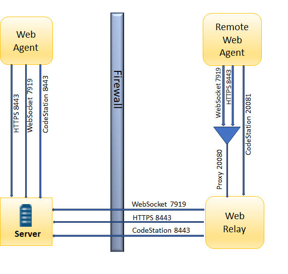
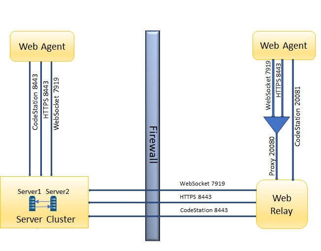

Firewall and communication configuration
This topic describes the communication between the IBM DevOps Deploy (Deploy) components, the firewall, and the ports involved in the communication.
Communication between the servers, agents, and relays
The agent runs the deployment target host and connects with the Deploy server. Agents connect to server for low-latency, high-bandwidth, or real-time applications. Instead of each agent connecting directly to the server, agents connect to agent relays, which then connect to the server. The communication between the relays and the server is always unidirectional. The server does not initiate the connection with agents or agents relays.
The following diagram shows the main default ports that are involved in communication between the server, agents, and agent relays.

For more information on communication between the server, agents, and agent relays, see Agent security and communication, Agents, and Agent relays.
Communication between the server clusters, agents, and relays
The Deploy servers, within a server cluster, connect with each other. The Deploy agents connect with the server cluster. The remote agents connect with the server clusters by using the agent relays, communication between the relays and the server cluster is always unidirectional.
The following diagram shows the main default ports that are involved in communication between agents, agent relays and the server cluster.

For more information on communication between the server, agents, and agent relays, see Agent security and communication, Agents, and Agent relays.
Communication ports topology
The following diagram shows the default port numbers that Deploy uses for communication. You can change most of these ports, depending on your choices during installation. The following diagram is only a summary of the default port numbers.

As shown in the diagram, agents can connect to servers directly or through agent relays. You must ensure that the agent communication can get to the server through any firewalls or other limitations.
Communication ports for the server
- The server must be able to initiate connections to the license server. The default port for Common Licensing is 27000. However, in some situations, the server uses different ports to connect to the license server. For more information, or to change the port, see https://www.ibm.com/support/pages/how-serve-license-key-client-machines-through-firewall.
- The server must be able to accept connections from agents and agent relays. By default, agent relays and WebSocket agents connect on port 7919.
- Users and agents that do not use a relay must be able to initiate connections to the server through HTTPS. The default port is 8443 for HTTPS.
- Installing agents remotely on Linux™ or UNIX™ systems requires the server to initiate connections to the SSH port of the agent computer. The default port for SSH is 22.
- Remote discovery of agents requires the server to initiate connections to port 22 for Linux agents and port 135 for Windows™ agents. See Discovering agents automatically.
- The server might require access to other ports if you connect to external systems, such as an SMTP server for notifications or to cloud systems that use virtual system patterns.
Communication ports for agents connecting to the server through agent relay
- Agents must be able to open network connections on the agent relay HTTP proxy port. The default agent relay HTTP proxy port is 20080.
- Agents must be able to open a network connection to the Agent Relay CodeStation proxy port (HTTP_proxy + 1, by default 20081).
- Agents run steps from automation plug-ins and source configuration plug-ins. Some of these steps require that agents create network connections to an external system.
- Agent relays must be able to open network connections on the server with an HTTPS port. The default HTTPS port is 8443. You cannot reverse the direction of this connection. Starting with V7.2.2, relays only support proxying HTTPS requests.
- Virtual images must be able to open network connections on the server's HTTP and HTTPS ports. The default HTTP and HTTPS ports are 8080 and 8443. You cannot reverse the direction of this connection.
- The agent that is installed on the virtual image must be able to open network connections on the agent relay port.
For more information, see Agent security and communication, Agents, and Agent relays.
Communication ports for agents connecting directly to the server
- WebSocket agents must be able to open network connections on the server. The default server port is 7919.
- Agents must be able to open network connections on the server with an HTTPS port. The default HTTPS port is 8443.
- Agents run steps from automation plug-ins and source configuration plug-ins. Some of these steps require that agents create network connections to an external system.
For more information, see Agent security and communication, Agents, and Agent relays.